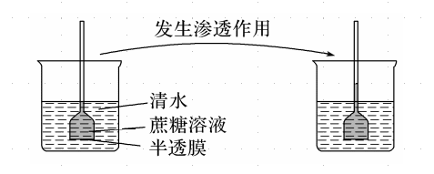
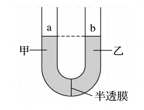
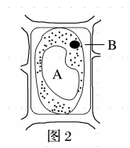
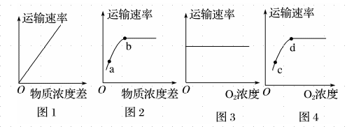
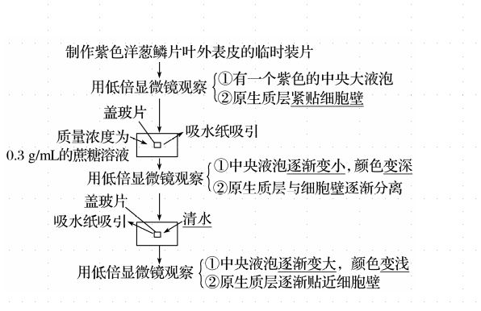

生物步步高6.细胞的物质输入和输出
同步
渗透作用的概念：水分子（或其他溶剂分子）通过半透膜的扩散过程。
渗透作用产生条件？ 具有半透膜。 半透膜两侧溶液具有浓度差。
对于动物细胞，外界浓度小于细胞质浓度时，细胞吸水膨胀。
对于动物细胞，外界浓度大于细胞质浓度时，细胞失水皱缩。
对于动物细胞，外界浓度等于细胞质浓度时，细胞维持正常形态。
对于植物细胞，外界浓度大于细胞液浓度时，细胞发生质壁分离现象。
对于植物细胞，外界浓度等于细胞液浓度时，细胞维持正常形态。
渗透与扩散有何区别？ 渗透作用必须有选择透过性膜(半透膜)，扩散则不一定需要； 渗透仅指溶剂分子，扩散适用于各种物质； 因此，渗透是一种特殊的扩散。
为什么吃比较咸的食物时，口腔和唇感觉比较干？ 与细胞内液相比，外界溶液浓度高，口腔上皮细胞失水。
判断：不同植物对同种无机盐离子的吸收有差异。 正确。
判断：同种植物对不同无机盐离子的吸收有差异。 正确。
人体甲状腺滤泡上皮细胞对碘的吸收是逆浓度梯度进行的。
判断：不同微生物对不同矿物质的吸收表现出较大的差异性。 正确。
轮作的意义是？ 防止长期在同一块田里种植同种作物导致土壤肥力下降。
科学家将番茄和水稻分别放在含有 、 和 的培养液中培养，水稻培养液中 、 浓度升高的原因？ 水稻吸收水分子的量多于吸收 、的量。
浓度低的饮料可以用来补充体内水分，而浓度高的饮料不能很好地起到补充体内水分的作用，是因为？ 过高浓度的饮料会导致细胞失水。
判断：虽然红细胞没有具膜细胞器，但将其放入一定浓度的外界溶液中，也能发生渗透作用。 正确，细胞膜。
原生质层指的是什么？ 成熟植物细胞的细胞膜、液泡膜和介于这两层膜之间的细胞质。 其包括细胞膜，细胞质，液泡膜。
原生质层包括细胞核吗？ 不包括。
苯的跨膜运输方式是？ 自由扩散。
乙醇跨膜运输方式是？ 自由扩散。
人的红细胞吸收葡萄糖跨膜运输方式是？ 协助扩散。
甘油跨膜运输方式是？ 自由扩散。
跨膜运输方式是？ 自由扩散。
跨膜运输方式是？ 自由扩散。
囊性纤维病：有的细胞中某种蛋白质结构异常，影响了 和 的跨膜运输，导致肺部细胞外侧 的聚积，使肺易受细菌伤害，这一事例说明这种结构蛋白属于细胞膜上的载体蛋白，也反映了细胞膜对离子的吸收具有选择性是通过细胞膜上载体蛋白的种类和数量来实现的。
通道蛋白：是一类跨越细胞膜磷脂双分子层的蛋白质，分为两大类：水通道蛋白和离子通道蛋白。肾小球的滤过作用和肾小管的重吸收作用都与水通道有关；神经信息的传递与离子通道密切相关。
判断：细胞质中的 可以通过扩散作用进入液泡内。 错误，主要考虑主动运输。
判断：同种物质进出同一细胞的方式一定相同。 错误。
判断：以胞吐的方式排出细胞的物质不一定都是生物大分子。 正确，例如神经递质。
判断：物质跨膜运输时，浓度差主要影响自由扩散和协助扩散。 正确。
温度如何影响物质跨膜运输？ 影响生物膜的流动性。 影响酶的活性，进而影响呼吸速率，影响主动运输。
成熟的植物细胞的原生质层相当于一层半透膜。
原生质层比细胞壁伸缩性大。
判断：观察植物细胞的质壁分离和复原只需要使用低倍镜。 正确。
判断：植物细胞的原生质层指的是细胞膜和液泡膜之间的细胞质。
错误。植物细胞的原生质层指的是细胞膜和液泡膜以及它们之间的细胞质。
判断：渗透系统的溶液的浓度指的是质量浓度。
错误。指的是物质的量浓度。
判断：顺浓度梯度的运输都是被动运输。
错误。为了增加运输效率，细胞有时也会通过主动运输进行顺浓度梯度的运输。
判断：被胞吞或胞吐的物质一定都是大分子物质。
错误。
判断：细菌细胞也能发生质壁分离，但现象不明显。 正确。
判断：可以用盐酸进行质壁分离实验。 错误，盐酸会杀死细胞。
判断：可以用酒精进行质壁分离实验。 错误，酒精会杀死细胞。
判断：可以用醋酸进行质壁分离实验。 错误，醋酸会杀死细胞。
质壁分离后在细胞壁和细胞膜之间的是浓度降低的外界溶液。这是因为细胞壁是全透性的，且有水分子通过原生质层渗透出来。
观察植物细胞的质壁分离和复原实验需要设置对照组吗？ 不需要，自身对照，前后对照。 未滴加溶液，细胞正常形态。 滴加高浓度溶液后，质壁分离。 滴加清水后，质壁分离复原。
判断：质壁分离可用于判断成熟植物细胞的死活。 正确。
判断：质壁分离可用于测定细胞液浓度范围。 正确，设置一系列浓度梯度的蔗糖溶液进行实验。
判断：菠菜叶进行质壁分离与复原实验时，叶绿体存在会干扰实验现象观察。 错误，不会。
细胞膜和液泡膜以及两层膜之间的细胞质称为原生质层。
植物细胞内的液体环境主要是指液泡里面的细胞液。
细胞膜和其他生物膜都是选择透过性膜，生物膜的这一特性，与细胞的生命活动密切相关，是活细胞的一个重要特征。
胞吞和胞吐是借助于膜的融合完成的，与膜的流动性有关，它是大分子和颗粒性物质进出细胞的物质运输方式，某些小分子也可通过胞吞、胞吐进出细胞，靠 ATP 提供动力。
在“观察植物细胞的质壁分离和复原”实验中，全程一共用低倍镜观察三次。为了便于观察，必须选择紫色洋葱鳞片的外表皮，其含有明显的紫色大液泡。
判断：若将洋葱表皮细胞放在一定浓度的淀粉溶液中，可发生质壁分离和质壁分离自动复原现象。 错误，不吸收淀粉。
判断：氧气浓度适当增高会促进羊成熟红细胞对葡萄糖的吸收。 错误，协助扩散不受影响。
判断：主动运输可以体现细胞膜的选择透过性。 正确。
判断：质壁分离后，细胞大小基本不变。 正确，考虑细胞壁。
-
「观察植物细胞的质壁分离和复原」实验的步骤：
-
制作紫色洋葱鳞片外表皮的临时装片
-
用低倍显微镜观察
-
有一个紫色的中央大液泡
-
原生质层贴近细胞壁
-
-
向载玻片上滴加质量浓度为 的蔗糖溶液，用吸水纸吸引
-
用低倍显微镜观察
-
中央液泡收缩，颜色变深
-
原生质层与细胞壁逐渐分离
-
-
向载玻片上滴加清水，用吸水纸吸引
-
用低倍显微镜观察
-
中央液泡膨胀，颜色变浅
-
原生质层逐渐贴近细胞壁
-
-
「观察植物细胞的质壁分离和复原」实验的原理：
-
内因：
-
成熟的植物细胞的原生质层相当于一层半透膜
-
原生质层比细胞壁的伸缩性强
-
-
外因：细胞液和外界浓度存在浓度差，细胞能渗透吸水和失水
-

-
漏斗内液面上升的原因
-
单位时间内由清水进入蔗糖溶液中的水分子数多于由蔗糖溶液进入清水中的水分子数。
-
-
漏斗内液面停止上升的原因
-
随着液面的不断上升，漏斗内液体的压强越来越大，从而使水分子从漏斗内移向烧杯的速率加快，水分子进出漏斗的速率越来越接近，直至完全相等，漏斗内液面不再升高，此时水分子的进出达到相对平衡。
-
-
若渗透平衡后，半透膜两侧液面仍存在液面高度差，则半透膜两侧溶液就存在浓度差，且液面高的一侧溶液浓度高。
! !判断：当半透膜两侧的渗透作用达到平衡时，两侧渗透压一定相等。 错误，可以有液面高度差，渗透压与水压加起来相等。
! !细胞处于此状态，比较 A,B 浓度。 细胞可能处在质壁分离复原、质壁分离或正常形态。
! !判断：将图 2,4 补全，则曲线过原点。 错误，无氧呼吸也能产生能量，无氧时仍有运输速率。
手动导入
